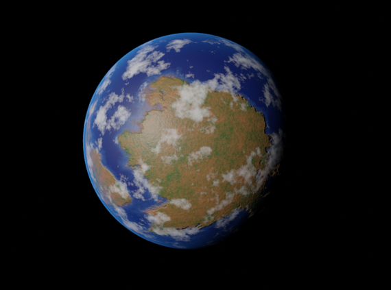
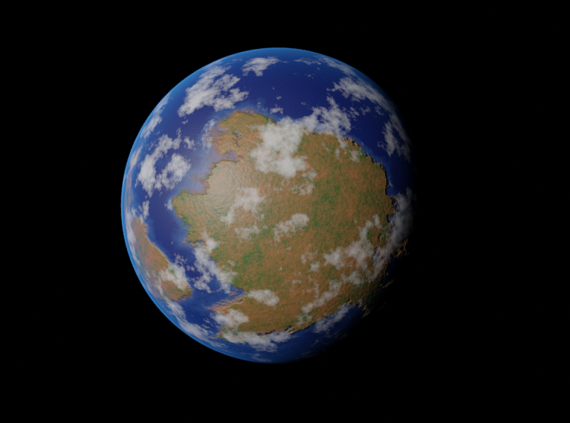

Projekte
Bachelor-Thesis: Entwicklung eines AR-Produktkonfigurators und die Analyse des KI-Nutzwerts (In Zusammenarbeit mit der CAS Software AG)
Unternehmen ermöglichen Kunden heute die individuelle Gestaltung ihrer Produkte mittels Produktkonfiguratoren. Besonders bei komplexen Produkten wie Autos ist die Visualisierung des Ergebnisses entscheidend. Augmented Reality (AR) bietet hier Potenzial, wird jedoch durch komplexe Benutzeroberflächen limitiert. Meine Arbeit fokussiert sich daher auf die Entwicklung eines AR- Produktkonfigurators mit integriertem, sprachgesteuertem KI-Assistenten. Dieser basiert auf einem Large Language Model (LLM), um natürliche Sprache zu verarbeiten. Die Kernidee liegt in der Synergie zwischen Augmented Reality und Künstlicher Intelligenz (AI). Diese Thesis präsentiert eine innovative Lösung, die nicht nur die Produktkonfiguration vereinfacht, sondern auch die Benutzerfreundlichkeit durch die Verbindung beider Technologien optimiert.
Game Design Prototyp: Temporal Transit Tales / DER BAHNHOF
ist ein 3D-Adventure-Mystery-Game, das in einem mysteriösen Bahnhof spielt, an dem die Zeit scheinbar stillsteht. Der Spieler übernimmt die Rolle eines Reporters namens Jack, der mit einem besonderen Gadget ausgestattet ist – einer Zeitkontrollmaschine und außerdem mit einer Kamera. Das Gameplay des Spiels ist eine Kombination aus Erkundung, Rätsellösung und Detektivarbeit. Der Spieler wird in der Lage sein, in einem begrenzten Bereich die Zeit um 15 Sekunden vor- oder zurückzuspielen, um Hinweise und Ereignisse zu enthüllen, die zur Lösung der Rätsel und zur Aufdeckung von Missständen im Bahnhof beitragen. Das Spiel ist in einem dystopischen Steampunk-Setting der 1910er Jahre angesiedelt. Die Ästhetik und Atmosphäre des Bahnhofs werden dem Spieler eine fesselnde Kulisse bieten, die reich an Details und Geheimnissen ist. Ich war in diesem Projekt für die entwicklung des Prototypen (mit Unity) und die Umsetzung des Game-Sounds (mit WWise) zuständig.
Interactive Audio Study: Desert Drift
Moderne Rennspiele (Wie: Forza Horizon, Gran Tourismo, Need for Speed) haben oft Lineare Soundtracks oder nutzen konventionelle Pop Musik. Mit dieser design Studie wollte ich herausfinden, wie man Musik in Rennspielen interaktiver und
reaktiver gestalten kann. Für die Umsetzung habe ich Unity und Wwise genutzt. Ich habe für den Ausgangspunkt ein frei verfügbares Rennspiel-Projekt benutzt, welches 2 Strecken und eine Steuerung für Autos beinhaltete.
Jegliche Musik in diesem Game wurde ebenfalls von mir Produziert
Blender Addon: Planet-Generator
Dieses Plugin wurde mithilfe eines mitstudenten (Nic R.) Geschrieben um das generieren und anpassen von Planeten und deren Materials zu vereinfachen. Dieses Plugin wurde mit Python geschrieben und enhält versch. anpassungsmöglichkeiten für Gesteinsplaneten (Terrestial Planets) und Gasplaneten.

 


Game-Prototyping Projekt: HotLine LA
Dieser Protyp ist eine vereinfachte kopie des Spiels "Hotline Miami". Es wurde mit der JS basierten Gameengine "Fudge" erstellt, als abgabe für das Fach "Prima - Prototyping of interactive Media and Games".
Link Zum Spiel (am besten in Chrome öffnen)
Link Zum Github-Repo